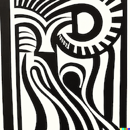
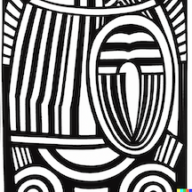

Crisis Horizon

Digital reprints of forgotten classics.
- Each of the works on this site is believed to be in the public
domain. Feel free to copy, share, repurpose, and remix. If you think
we’ve made a mistake, let me know.
- All publications are formatted in markdown and converted to HTML
using modified versions of Kieran
Healy’s Pandoc
templates..
- Crisis Horizon is inspired by the
names of two magazines created and edited by W.EB. Du Bois. The Horizon,
associated with the Niagara Movement, was published between 1907 and
1910. Du Bois founded The Crisis, the official journal of the NAACP, in
1910 and was its editor until 1934.
- Artwork on the homepage is created with the prompt “abstract Harlem
renaissance black and white woodcut by Aaron Douglas” using OpenAI’s
Dall-E.
- Neal Caren is the founder and
editor of Crisis Horizon.